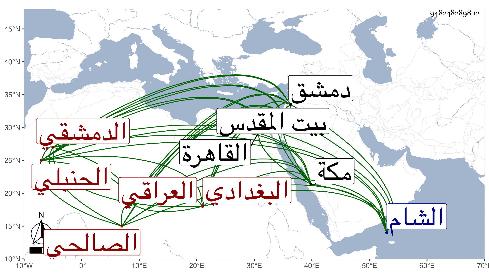

0902Sakhawi.DawLamic.ITO20230111-ara1.EIS1600.948248289802
Biography ID: 948248289802
697
علي بن البهاء بن عبد الحميد بن البهاء بن إبراهيم بن محمد العلاء الزريراني بالنون البغدادي الأصل العراقي المولد ثم الدمشقي الصالحي الحنبلي ويعرف بالعلاء ابن البهاء . ولد تقريبا سنة ثمان عشرة وثمانمائة وقدم الشام في سنة سبع وثلاثين فتفقه بالتقي بن قندس وبالبرهان بن مفلح وعنهما أخذ الأصول ، وحج وزار بيت المقدس مرارا ولقيته بصالحية دمشق فسمع معنا على كثيرين بل قرأ الصحيحين على الشمس محمد بن أحمد بن معتوق والنظام بن مفلح وكذا سمع بعض المسند وغيره على ابن الطحان وابن ناظر الصاحبة وابن بردس ومن مسموعه على ابن الطحان مآخذ العلم لابن فارس ، وقدم القاهرة في سنة سبع وسبعين وتردد لمدرسي الوقت لتمييز مراتبهم وحضر عندي في مجالس الإملاء وسمع مني وعلى الشهاب الشاوي بعض المسند ، وأقام إلى أثناء ذي القعدة من التي تليها ثم توجه بعد أن درس جماعة من الطلبة كالتقي البسطي والسيد عبد القادر القادري وأذن لهما ولغيرهما ونزل في صوفية الخانقاه الشيخونية واستوحش من قاضي المذهب البدر السعدي ومن غيره ولما رجع ناب فيما بلغني عن النجم ابن البرهان بن مفلح في القضاء وما أحببته له ولكن الغالب عليه الصفاء والخير مع استحضار للفقه ومشاركة وكان مجاورا بمكة في سنة تسعين وأقرأ هناك الفقه .
